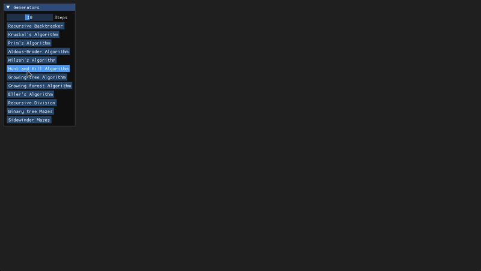

Hunt and Kill Algorithm
The recursive backtracker without the stack, scanning for a new place to start whenever it gets stuck
Hunt and Kill Algorithm #
Hunt and Kill is the Recursive Backtracker without the stack. It starts the same way: walk into a random unvisited neighbouring room, knocking down the wall behind you, until you’re stuck. That’s the kill phase. But instead of backing up, it hunts. It scans the grid row by row for a room that isn’t in the maze yet but touches one that is, connects it to a random such neighbour, and starts walking from there again. When a scan finds nothing, every room is in the maze.
The mazes have the same long winding corridors as the backtracker’s, with no stack and no recursion. The cost is the scan, which has to look further and further as the maze fills up. The scan always starts at the top-left, so new walks tend to begin near the top of the maze.

Pseudocode #
room = a random room; mark it visited
loop:
while room has an unvisited neighbour:
next = a random unvisited neighbour
knock out the wall between room and next
mark next visited
room = next
found = false
for each room r in the grid, row by row:
if r is not visited and has a visited neighbour:
n = a random visited neighbour of r
knock out the wall between r and n
mark r visited
room = r
found = true
stop scanning
if not found: doneSolution #
// a random direction whose neighbouring room is a WALL (unvisited)
// or a PATH (visited), depending on `kind`
random_dir :: proc(maze: ^[COLS][ROWS]Cell, room: [2]i32, kind: Cell) -> ([2]i32, bool) {
dirs := [4][2]i32{{-1, 0}, {1, 0}, {0, -1}, {0, 1}}
rand.shuffle(dirs[:])
for d in dirs {
next := room + 2 * d
if !is_cell_in_bounds(next) || maze[next.x][next.y] != kind do continue
return d, true
}
return {}, false
}
hunt :: proc(maze: ^[COLS][ROWS]Cell) -> ([2]i32, bool) {
for y: i32 = 1; y < ROWS - 1; y += 2 {
for x: i32 = 1; x < COLS - 1; x += 2 {
if maze[x][y] != .WALL do continue
room := [2]i32{x, y}
dir, ok := random_dir(maze, room, .PATH)
if !ok do continue
wall := room + dir
maze[wall.x][wall.y] = .PATH
maze[x][y] = .PATH
return room, true
}
}
return {}, false
}
hunt_and_kill :: proc(maze: ^[COLS][ROWS]Cell, room: [2]i32) {
room := room
maze[room.x][room.y] = .PATH
for {
// kill: walk until stuck
dir, ok := random_dir(maze, room, .WALL)
for ok {
wall, next := room + dir, room + 2 * dir
maze[wall.x][wall.y] = .PATH
maze[next.x][next.y] = .PATH
room = next
dir, ok = random_dir(maze, room, .WALL)
}
// hunt: scan for a new place to start
room, ok = hunt(maze)
if !ok do break
}
}
generate :: proc(maze: ^[COLS][ROWS]Cell) {
hunt_and_kill(maze, random_room())
}Run it, press space a few times, and you’ll get a new maze each time.
odin run .